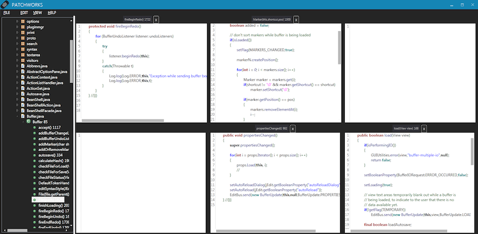

I work on AI + dev tools.
I've been in several situations where I needed to implement experimental features in software projects with millions of lines of code given very little time and no familiarity with the code. On reflection, I noticed that I was applying the same patterns to the projects which might be useful for others. This is the first post in a series about my design patterns for hacking together prototypes.
The projects included extending Microsoft's internal code reviewing tool and build system (see CFar) and National Instrument's LabVIEW development environment (see Patchworks LV, Yestercode, and CodeDeviant). The goal of these projects was to quickly demonstrate and evaluate a proof of concept, not produce software for customers. My code was essentially "throw away." These are not design patterns for production use!
"Everything can be coerced into a dictionary." - me
Architecting code for proper object ownership and access is hard. For example, when building Patchworks, multiple components of the system needed to update the contents of different UI elements that were related. Should we just pass object references to every component? Maybe for a simpler system. If we had the time to design this correctly, it would have layers of abstraction that would manage the communication between components and their object access. (Go start with Model-View-Controller if you want to be boring.)
But we have millions of lines of code which we don't have the time to understand or change. So instead, we will utilize global lookup tables that take an object reference as the key and return an object reference as the value. I call these object dictionaries.
Take a closer look at Patchworks. There is a grid of text editors (with more off-screen), each with an associated label and close button. If the user clicks one of the close buttons, how do we clear the correct text editor and label? Or if the user opens a file inside an editor, how do we update the corresponding label and make the close button visible? Our handy dandy lookup tables!
Dictionary<Label, Editor> labelToEditor; // Get editor from label. Dictionary<Button, Editor> buttonToEditor; // Get editor from button. Dictionary<int, Editor> indexToEditor; // Get editor from index. E.g., 5 would return the 6th editor from the left. Dictionary<Editor, Label> editorToLabel; // Get label from editor. Dictionary<Editor, FilePath> filesLoaded; // Get the editor's currently opened file's path.
These dictionaries allow us to form relationships between objects. Given a reference to one type of object, we can get the corresponding reference to another type of object. So now when the user clicks a close button, we can use buttonToEditor with the button that was clicked as the key in order to get the corresponding text editor object.
Not only that, but we can use lookup tables to form all sorts of relationships between objects! For example, filesLoaded lets us associate an editor with the file's path that it currently has opened (I mean, who has time to design a class to do this!?). An example of using one of the dictionaries:
void closeButton_MouseLeftButtonUp(object sender, MouseButtonEventArgs e) {
var relevantEditor = buttonToEditor[(Button) sender]; // Get editor relevant to clicking close.
relevantEditor.Text = ""; // Clear editor contents.
filesLoaded.Remove(relevantEditor); // Update dictionaries...
...
}
To build these lookup tables, we set most of them up when we generate the GUI. For example, during the GUI's initialization, all of the editors, buttons, and labels are programmatically generated in a single loop. In this loop we can insert our dictionary entries. The filesLoaded dictionary is different in that we update it whenever a new file is opened or the close button is clicked. Be careful when you update an object since you may need to update several dictionaries too. This can start to get unwieldy.
I've found myself using these ugly lookup tables of object references in virtually all of my prototypes. Of course, if the code exists long enough then I will refactor it into something a little more refined :)
If you want to learn about real design patterns then I would recommend: